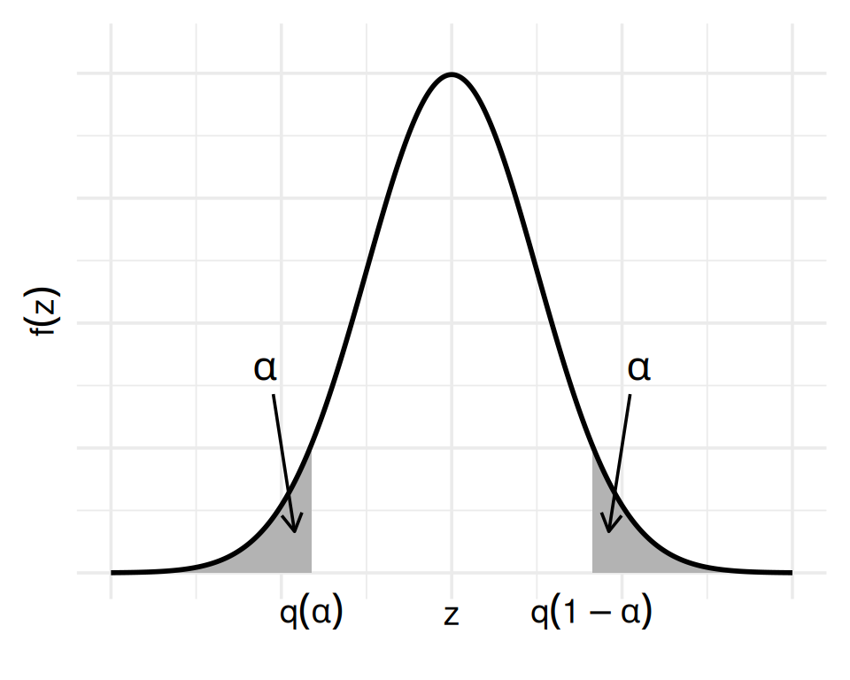
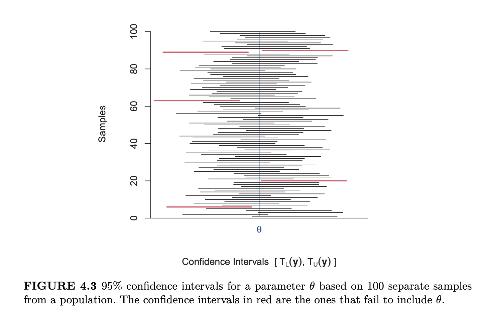
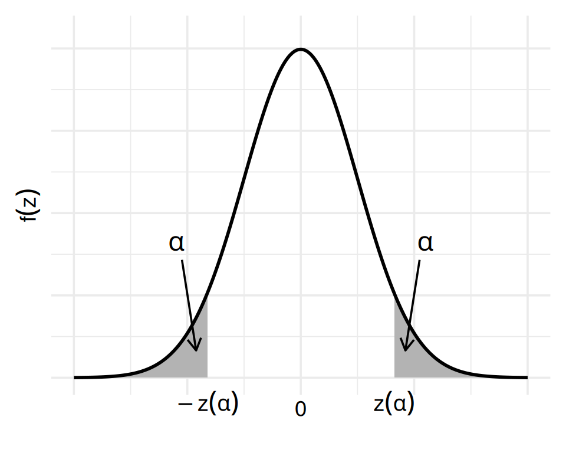
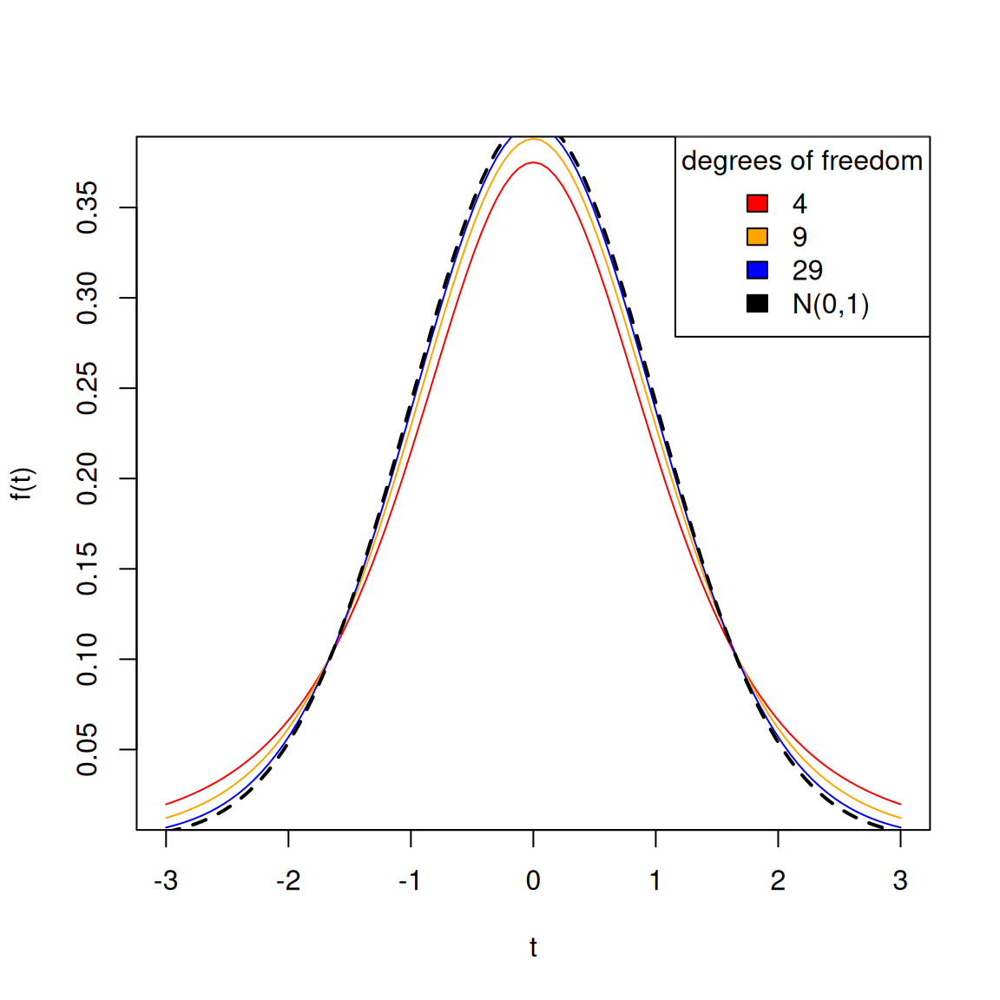
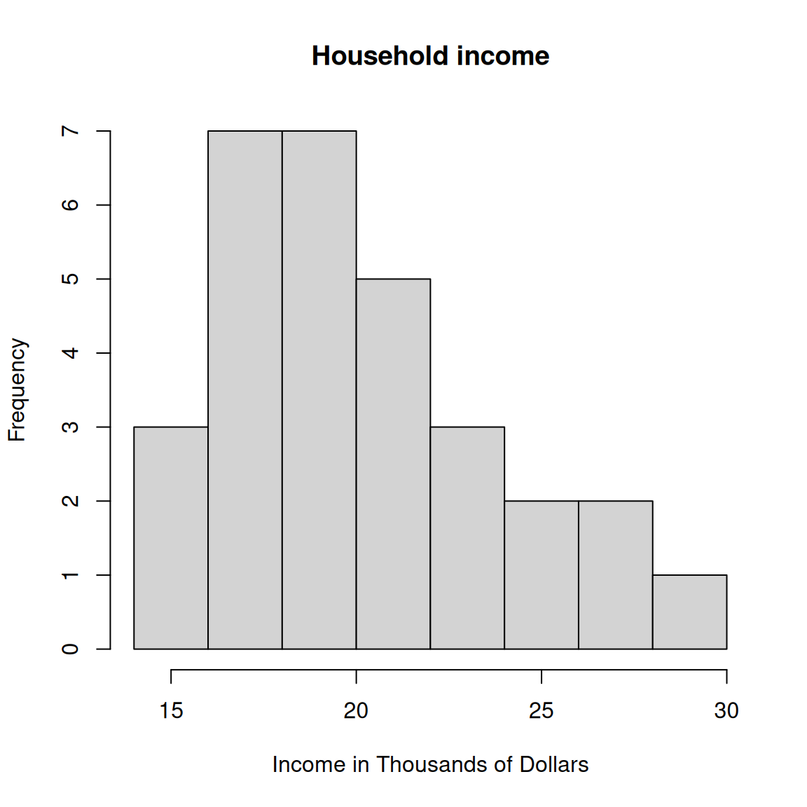

Confidence Intervals for the Population Mean
Corresponding reading
Note
These lecture notes weave in material from Shobhana Stoyanov’s lecture notes about the t-distribution from Spring 2026, Lecture 35.
Since we know our estimate will never exactly be the true parameter, we’d really like to be able to give a range of likely values. This is the intuitive goal of confidence intervals
Definition of CI
A confidence interval for some population parameter \(\theta\) is a random interval, whose endpoints are constructed using the sample, such that the interval contains \(\theta\) with some specified probability \(1-\alpha\). Let the interval be given by \((T_L(X),T_U(X))\), then \[P(T_L(X)\leq \theta \leq T_U(X))=1-\alpha\] A confidence interval is generally reported as an interval, \((T_L(X),T_U(X))\).
\(1-\alpha\) is called the confidence level or coverage probability and usually something close to \(1\) like 0.95 or 0.99. We generally call this a \(100(1-\alpha)%\) confidence interval, e.g. a 95% confidence interval.
Caution
Notice that \(T_L(X)\) and \(T_U(X)\) are statistics, meaning that they are quantities that can be calculated just from the data, with no unknown parameters. When calculate a confidence interval, you plug in the data in for \(T_L(X)\) and \(T_U(X)\), and will get intervals that look like \((4.3,5.9)\) or \((-0.1,4)\).
But since we usually write down \(T_L(X)\) and \(T_U(X)\) as general equations, it is a common mistake to include an unknown parameter in those equations! You should always check that you can actually calculate \(T_L(X)\) and \(T_U(X)\) with the data and return actual numbers!
Understanding a CI
It is very important to note that the assumption is that the population parameter is fixed; it is the boundaries \(T_L(X)\) and \(T_U(X)\) that are random, i.e. the interval. And so the probability of coverage is associated with the random interval. .
This means that each time we take a sample of size \(n\), and then plug in our observed data, we will get a different realization of this random interval. We want to a method for creating intervals that on average (over realizations) have a probability of \(1-\alpha\) of containing the true value. For example if \(\alpha = 0.05\), we construct an interval that contains the true mean 95% of the times (on average).
When we have a particular confidence interval, i.e. evaluated on our data, it is a realization of a random interval – it will either cover the truth or not. The probability coverage refers not to any particular interval, but the average (long-term) behavior of this method of constructing intervals.

Note
In probability, you often see expressions like \(P(2\leq X \leq 3)\) where \(X\) is the random variable. Our above formula for a CI is confusing, because it makes it look like the value \(\theta\) is random because it is in the middle of the expression: \[P(T_L(X)\leq \theta \leq T_U(X))=1-\alpha\] Sometimes it can help to see the probability expression written like this instead, \[P\big(T_L(X)\leq \theta \text{ and } T_U(X) \geq \theta\big)=1-\alpha.\] This can help to anchor which parts are random (any functions of \(X\)) versus fixed (\(\theta\))
Exercise/Question
20 different polling companies have conducted independent surveys to estimate the proportion of US voters who approve of RFK Jr’s stewardship of Health and Human Services. Each company estimates this proportion using a 95% confidence interval. About how many do you think will be successful in covering the true proportion?
Check your answer
If we let \(Y\) be the number of confidence intervals out of 20 that are successful, then since each interval has a 0.95 chance of success, we see that \(Y\sim Bin(20, 0.95)\). Therefore the expected number of successful intervals is \(E(Y) = 20\times 0.95 = 19.\)Quantiles
To construct \(T_L(X)\) and \(T_U(X)\), it’s clear we’re going to be inverting our probability calculations, i.e. finding values that give us specific probabilities.
Figuring out what number will give you a certain probability of being less than (or greater than) that a particular value is a question of finding a quantile of the distribution. Specifically, a quantile tells you at what point you will have a particular probability of being less than that value.
Definition 1 (Quantile) For \(0 \le \alpha \le 1\), \(q\) is the \(\alpha\) quantile of a distribution, if \[P(X\leq q)=\alpha.\]
We will often write \(q_{\alpha}\) or \(q(\alpha)\) for the \(\alpha\) quantile of a distribution. \(q_{\alpha}\) is simply the value on the \(x\)-axis such that the area under the density curve to the left of \(q(\alpha)\) is \(\alpha\).
So if \(q_{0.25}\) is a 0.25 quantile of a normal distribution, that means that \[P(X \leq q_{0.25})=0.25.\] And if \(q_{0.90}\) is a 0.90 quantile if \(P(X\leq q_{0.90})=0.90\), and so forth
These numbers can be looked up easily in R for standard distributions.
Standard Normal Distribution
Because a \(N(0,\sigma^2)\) distribution is symmetric around 0, we have that \[q_{\alpha}=-q_{1-\alpha}\] Because the standard normal distribution is so critical in creating many common confidence intervals, we define the absolute value of the quantiles of a standard \(N(0,1)\) distribution as \[z_{\alpha}=|q_{\alpha}|=|q_{1-\alpha}|\]
In particular, if \(\sigma^2=1\) and \(\alpha=0.025\), \[z_{0.025}\approx 1.96\] So if \(Z\sim N(0,1)\), \[P(-1.96\leq Z \leq 1.96)=0.95\] More generally, if \(Z\sim N(\mu,\sigma^2)\), then we have \[P(\mu-1.96\sigma^2\leq Z \leq \mu+1.96\sigma^2)=0.95\]

Simplest case – know everything!
Let’s try to derive the confidence interval for the population mean \(\mu\). Let’s make our life as simple as possible, and assume we have beautifully normally distributed data, each i.i.d. \(N(\mu,\sigma^2)\). Let’s even assume we know \(\sigma^2\) (!). Let’s try to get a 0.95 confidence interval
Then we know that \(\bar{X}\sim N(\mu,\frac{\sigma^2}{n})\), or equivalently, \[Z=\frac{\bar{X}-\mu}{\sqrt{\sigma^2/n}} \sim N(0,1)\] so we have \[P(-1.96\leq \frac{\bar{X}-\mu}{\sqrt{\sigma^2/n}} \leq 1.96)=0.95\]
For a 0.95 confidence interval for \(\mu\) we need \[P(T_L(X) \leq \mu \leq T_U(X))=0.95 \] We can just rearrange the above equation, \[ \begin{aligned} 0.95&=P(-1.96\leq \frac{\bar{X}-\mu}{\sqrt{\sigma^2/n}} \leq 1.96)\\ &=P(-1.96\sqrt{\frac{\sigma^2}{n}}\leq \bar{X} -\mu \leq 1.96\sqrt{\frac{\sigma^2}{n}})\\ &=P(-1.96\sqrt{\frac{\sigma^2}{n}}-\bar{X}\leq -\mu \leq 1.96\sqrt{\frac{\sigma^2}{n}}-\bar{X})\\ &=P(1.96\sqrt{\frac{\sigma^2}{n}}+\bar{X}\geq \mu \geq -1.96\sqrt{\frac{\sigma^2}{n}}+\bar{X})\\ &=P(\bar{X}-1.96\sqrt{\frac{\sigma^2}{n}}\leq \mu \leq \bar{X}+1.96\sqrt{\frac{\sigma^2}{n}})\\ \end{aligned} \] This gives us \[ \begin{aligned} T_L(X)&= \bar{X}-1.96\sqrt{\frac{\sigma^2}{n}}\\ T_U(X)&= \bar{X}+1.96\sqrt{\frac{\sigma^2}{n}} \end{aligned} \] Or more as an interval, \[(\bar{X}-1.96\sqrt{\frac{\sigma^2}{n}}, \bar{X}+1.96\sqrt{\frac{\sigma^2}{n}})\] Since the interval is symmetric around \(\bar{X}\), you will often see this written as \[\bar{X}\pm 1.96\sqrt{\frac{\sigma^2}{n}}\]
Note
This only makes sense because we are assuming \(\sigma^2\) is known. Otherwise, this is not something we can actually calculate and thus not a confidence interval!
Back to Reality: unknown \(\sigma^2\)
However, this assumes we know \(\sigma^2\) and that our data is precisely normal – very big assumptions. What if these don’t hold true?
There are two ideas we might consider:
- We could estimate \(\sigma^2\) with our estimate of \(\sigma^2\), \[S^2=\frac{1}{n-1}\sum_i(X_i-\bar{X})^2\]
- We could use the fact that the central limit theorem (CLT) tells us that with only minimal assumptions, \(\bar{X}\) is approximately distributed \(N(\mu,\sigma/n)\) even if the \(X_i\) are not themselves normal, i.e. \[\dfrac{\overline{X}-\mu}{\sigma_{\overline{X}}} \approx \mathcal{N}(0,1)\]
Putting these together would give us an potential 95% confidence interval for \(\mu\):
\[\bar{X}\pm 1.96\frac{S}{\sqrt{n}}\]
But is this a valid confidence interval? To be a valid confidence inverval requires that \[ \begin{aligned} 0.95&=P(\bar{X}- 1.96\sqrt{\frac{S^2}{n}}\leq \mu \leq \bar{X}+ 1.96\sqrt{\frac{S^2}{n}})\\ &=P(1.96\leq \frac{\bar{X}-\mu}{S/\sqrt{n}} \leq 1.96) \end{aligned} \] What do I know about the distribution of \[T=\frac{\bar{X}-\mu}{S/\sqrt{n}}\hspace{3ex}?\] This is quite a different random variable than before. Now we have randomness in both the numerator (\(\bar{X}\)) and the denominator (\(S\)), so \(T\) is a function of two random variables. Having \(S\) in the denominator results in more variability of \(T\). If \(n\) is large, then \(S^2\) as an estimate of \(\sigma^2\) will be very close to \(\sigma^2\), so it might not be a big difference to our previous \(Z\) random variable. But if \(n\) is small, then \(S^2\) as an estimate of \(\sigma^2\) can be noisy, adding more variability to \(T\) than we would expect for a \(N(0,1)\).
Thus, there are two answers to the question: what is the distribution of \(T\)?
- From an asymptotic perspective (\(n\) large), \(T\) converges to a \(N(0,1)\) distribution, \[T \overset{D}{\rightarrow} N(0,1).\] (when we dive into asymptotics, we will discuss why we can replace \(\sigma^2\) with \(S^2\) more fully).1 So in large sample sizes, the above confidence interval, \[\bar{X}\pm z_\alpha \frac{S}{\sqrt{n}}\] where we still use \(z_\alpha\) and simply plug in \(S\) for \(\sigma\), will be approximately valid, meaning the probability that the CI covers the true \(\mu\) is approaching 0.95 as \(n \rightarrow \infty.\) Even better, \(n\) doesn’t have to be very large for this to be a good approximation (e.g. \(n>30-50\) usually suffices).
- However, from a finite sample perspective (\(n\) small), things are harder. \(T\) does not follow a \(N(0,1)\) distribution, even if \(X_i\sim N(\mu,\sigma^2)\).
So what can we do for small \(n\)? In fact, if \(X_i\sim N(\mu,\sigma^2)\), then \(T\) follows a distribution called the \(t\)-distribution. The \(t\)-distribution is not the same as a \(N(0,1)\) distribution, so \(z_\alpha\) is not the right value to use, but we can instead use the corresponding quantile of the \(t\)-distribution and get valid CI.
Note
Notice that the whole line of reasoning to get these CI for small sample sizes only holds if \(X_i\sim N(\mu,\sigma^2)\). If that assumption is not true, then we do not have a solution.
So if we have small sized data sets, we are going to rely really heavily on our assumption of normality. And because we have small amounts of data, it is going to be much harder to check our assumptions!
Furthermore, for clearly non-normal data, like binary data or count data, we certainly can’t use the \(t\)-distribution. So we will frequently rely on the CLT theorem and use our asymptotic CI for these situations.
Confidence intervals using the \(t\)-distribution
If we cannot use the central limit theorem (because the sample size is too small) AND if we are willing to assume that our \(X_i \overset{\text{IID}}{\sim} N(\mu, \sigma^2)\), we can use what is called the \(t\)-distribution to construct confidence intervals. This is because if \(X_i \overset{i.i.d}{\sim}N(\mu,\sigma^2)\), \[T = \frac{\bar{X} - \mu}{S/\sqrt{n}} \sim t_{n-1}\] where \(t_{n-1}\) is a \(t\)-distribution with \(n-1\) degrees of freedom.
We will more formally describe the t-distribution below, but the salient feature is that it has a single parameter, called the degrees of freedom. Let’s visualize the density of the t-distribution for different choices of the degrees of freedom.

We see that the \(t\) distribution is pretty similar to the \(N(0,1)\) distribution (symmetric, centered at \(0\)). However, it has “fatter” tails than \(N(0,1)\), meaning it has more probability of getting large values of \(T\) than a \(N(0,1)\). That’s the effect of estimating \(\sigma\) with \(S\) – that extra variability is making it more likely to get large values away from zero.
Furthermore, we see that the degrees of freedom parameter of the distribution controls how heavy the tails are. Larger degrees of freedom result in less probability mass in the tails, and closer to the \(N(0,1)\). For our random variable \(T\), the degrees of freedom is \(n-1\), so it means with larger sample size \(n\), \(T\) is getting closer and closer to a \(N(0,1)\) distribution. This is because our estimator \(S^2\) is getting less and less noisy.
Notice that already, for \(n=30\), the \(t\)-density is barely distinguishable from the black standard normal curve.
So how do we construct a confidence interval based on the \(t\) distribution? We need to know values \(u\) and \(v\) so that \[P(u\leq \frac{\bar{X}-\mu}{S/\sqrt{n}} \leq v)=1-\alpha\]
Let \(t_{\alpha/2,\,n-1}\) denote the value with area \(\alpha/2\) to its right (i.e. the \(1-\alpha/2\) quantile). Just like before \(-q_{\alpha/2,n-1} = q_{1-\alpha/2,\,n-1}=t_{\alpha/2,\,n-1}\) by the symmetry of the distribution about \(0\). Then
\[
\begin{gathered}
P\!\left(-t_{\alpha/2,\,n-1} \le \frac{\bar{X}-\mu}{S/\sqrt{n}} \le t_{\alpha/2,\,n-1}\right) = 1-\alpha
\\
\Rightarrow\quad P\!\left(-\frac{S}{\sqrt{n}}\,t_{\alpha/2,\,n-1} \le \bar{X}-\mu \le \frac{S}{\sqrt{n}}\,t_{\alpha/2,\,n-1}\right)\\
\Rightarrow\quad P\!\left(\bar{X} - \frac{S}{\sqrt{n}}\,t_{\alpha/2,\,n-1} \;\le\; \mu \;\le\; \bar{X} + \frac{S}{\sqrt{n}}\,t_{\alpha/2,\,n-1}\right) = 1-\alpha
\end{gathered}
\] The quantiles of the \(t\) distribution can be found with the qt function in R. Here are some values of \(t_{\alpha/2,n-1}\) for different values of \(n\)
| alpha | n=5 | n=10 | n=30 | n=75 | N(0,1) |
|---|---|---|---|---|---|
| 0.100 | 2.131847 | 1.833113 | 1.699127 | 1.665707 | 1.644854 |
| 0.050 | 2.776445 | 2.262157 | 2.045230 | 1.992544 | 1.959964 |
| 0.010 | 4.604095 | 3.249836 | 2.756386 | 2.643913 | 2.575829 |
| 0.001 | 8.610302 | 4.780913 | 3.659405 | 3.426916 | 3.290527 |
When to use \(t\) versus \(N(0,1)\)?
If \(n\) is large (e.g. \(n>50\)), its almost equivalent to just use \(z_\alpha\) instead, unless you are picking a very small value of \(\alpha\). For most “standard” values of \(\alpha\), like \(0.01\) or \(0.05\), there will not be a meaningful difference, particularly relative to other sources of possible error in your analysis.
However, we see that we will always get a wider confidence interval with a \(t\)-distribution. This is because the \(t\) distribution has wider tails than the \(N(0,1)\), so the \(t\) quantiles are always larger in absolute value. This means you will indicate less confidence in your estimate with the \(t\) distribution, regardless of whether the normality assumption makes sense or not.
For this reason, the \(t\) is always the more conservative choice, even if we are not sure about the normality assumption. Thus the \(t\) distribution is in practice always preferred over the \(z\)-based confidence intervals (its just that at a certain point they don’t really give you a different answer).
Example – Chicago Income Data
Let’s look at some data from the book of the annual income for heads of households living in public housing in Chicago2. It consists of a random sample of 40 households.
We can easily calculate a 95% CI for this data:
chicago<-read.table("https://stat4ds.rwth-aachen.de/data/Chicago.dat",header=TRUE)
meanIncome<-mean(chicago$income)
sdIncome<-sd(chicago$income)
seMean<-sdIncome/sqrt(nrow(chicago))
tquantile<-qt((1-0.05/2),df=nrow(chicago)-1)
upperCI<-meanIncome+tquantile*seMean
lowerCI<-meanIncome-tquantile*seMean
print(c(lower=lowerCI,mean=meanIncome,upper=upperCI)) lower mean upper
18.95878 20.33333 21.70788 We can check our answer with the automatic answer from a built in function in R:
t.test(chicago$income)
One Sample t-test
data: chicago$income
t = 30.255, df = 29, p-value < 2.2e-16
alternative hypothesis: true mean is not equal to 0
95 percent confidence interval:
18.95878 21.70788
sample estimates:
mean of x
20.33333 Is this a good idea? We are making strong assumptions about normality.

We can see some possible concerns, like that the data has a long right tail. Income is a common variable that has a heavy right tail. So there are some question marks about the validity of this CI for this data.
What was the effect of using a \(t\) quantile in our income data? The only difference was our choice of the quantile.
zquantile<-qnorm((1-0.05/2))
upperCI.z<-meanIncome+zquantile*seMean
lowerCI.z<-meanIncome-zquantile*seMean
print(rbind("Z"=c(lower=lowerCI.z,mean=meanIncome,upper=upperCI.z),
"t"=c(lower=lowerCI,mean=meanIncome,upper=upperCI))) lower mean upper
Z 19.01609 20.33333 21.65058
t 18.95878 20.33333 21.70788Given our concerns with the distribution of the data, does the asymptotic distribution make more sense here? Not really. We only have 30 data points, which is border-line for moving to an asymptotic assumption, even for the CLT which is quite powerful. This is particularly the case when we suspect our data is skewed (i.e. not symmetric); the CLT needs a larger sample size to have good approximations for skewed distributions than for symmetric distributions.
Furthermore, as we said above, even with our concerns about normality, the \(t\) distribution is always the conservative choice, indicating more uncertainty. Therefore, if we have to choose between the \(t\) CI and the normal, we would pick the \(t\). However, we would still keep in mind that our CI might still be overestimating our confidence given our concerns.
Example – Proportion
What about a CI for a proportion? Here it makes sense to use our normal asymptotic confidence interval to get a CI for our proportion.
Another example from the book is a survey in 2018 regarding whether people believed in life after death. Out of 2123 people, 1720 people said “Yes”. Our estimate of the proportion in the population is \(\hat\pi=0.81\).
To get a confidence interval, we would generally use an asymptotic normal CI here, since this is a large sample size.3
Our CI above was \[\bar{X}\pm z_\alpha \frac{S}{\sqrt{n}}\] where \(\frac{S}{\sqrt{n}}\) is our estimate of the standard error of \(\bar{X}\). But recall with a proportion, we usually estimate our standard error as \[\sqrt{\frac{\hat\pi(1-\hat\pi)}{n}},\] (which is our estimate dividing by \(n\) rather than \(n-1\)).
This gives us a CI, \[\hat\pi \pm z_\alpha \sqrt{\frac{\hat\pi(1-\hat\pi)}{n}}\]
pihat<-1720/2123
sepi<-sqrt(pihat*(1-pihat)/2123)
upperCI.pi<-pihat+zquantile*sepi
lowerCI.pi<-pihat-zquantile*sepi
print(c(lower=lowerCI.pi,mean=pihat,upper=upperCI.pi)) lower mean upper
0.7934926 0.8101743 0.8268560 This time we see that we get a slightly different answer than the built-in function prop.test for normal confidence intervals for proportions in R,
prop.test(x=1720,n=2123)
1-sample proportions test with continuity correction
data: 1720 out of 2123, null probability 0.5
X-squared = 815.76, df = 1, p-value < 2.2e-16
alternative hypothesis: true p is not equal to 0.5
95 percent confidence interval:
0.7926950 0.8265173
sample estimates:
p
0.8101743 This is because the built in function is using a “continuity correction” to make the normal approximation better. You also see in the book that they develop a score confidence interval for the proportion going back to basic principles and redoing the calculation for the confidence interval. You will often see there are a variety of different ways to calculate confidence intervals for well-known and important distributions, especially for a proportion which is such an important non-normal use-case.
The \(t\)-Distribution
Let’s look a bit more at the definition of the \(t\) distribution mathematically and why \(T\) is distributed according to a \(t\)-distribution.
Recall the following facts:
- If \(Z \sim N(0,1)\), then \(Z^2 \sim \chi^2_1\).
- If \(U_1, U_2, \ldots, U_n \overset{\text{IID}}{\sim} \chi^2_1\), then \(\displaystyle\sum_{i=1}^{n} U_i \sim \chi^2_n\).
- If \(U\) and \(V\) are independent, with \(U \sim \chi^2_k\), \(V \sim \chi^2_m\), then \(U + V \sim \chi^2_{k+m}\).
Definition 2 (The \(t\)-Distribution) If \(Z \sim N(0,1)\), \(U \sim \chi^2_n\), and \(Z\) is independent of \(U\), then \[T = \frac{Z}{\sqrt{U/n}}\] is said to have the \(t\)-distribution with \(n\) degrees of freedom.
Properties of the \(t\)-distribution
- \(T\) is symmetric about \(0\) (because \(Z\) is).
- \(E(T) = 0\).
- \(\operatorname{Var}(T) = \dfrac{n}{n-2}\) for \(n > 2\) (the variance is undefined for \(n \leq 2\)).
Since \(U \sim \chi^2_n\), we have \(E(U) = n\) and \(\operatorname{Var}(U) = 2n\).
For large \(n\), \(T_n\) approaches \(Z\), but for small \(n\), \(T_n\) has fatter tails, \[\operatorname{Var}(T_n) > \operatorname{Var}(Z).\]
Note that \(E(U/n) = 1\) and \(U/n = \frac{1}{n}\sum Z_i^2 \xrightarrow{} 1\) where \(Z_i \sim \mathcal{N}(0,1)\) for all \(i\).
Distribution of \(T\): Key Theorems
Our random variable \(T\) is \[T = \frac{\bar{X} - \mu}{S/\sqrt{n}}, \qquad \text{where } S^2 = \frac{1}{n-1}\sum_{i=1}^{n}(X_i - \bar{X})^2\] \(S^2\) and \(\bar{X}\) are both random variables, so I need to consider the joint distribution of \(\bar{X}\) and \(S^2\).
We have said that the \(t\) distribution is defined as the ratio of two independent random variables, \(U\sim \chi_n\) and \(Z\sim N(0,1)\).
We can rewrite our random variable \(T\) as \[ T=\dfrac{\bar{X}-\mu}{S/\sqrt{n}} = \dfrac{\left(\dfrac{\bar{X}-\mu}{\sigma}\right)}{\dfrac{S}{\sqrt{n}\sigma}} = \dfrac{\left(\dfrac{\bar{X}-\mu}{\sigma/\sqrt{n}}\right)}{\sqrt{S^2/\sigma^2}} \] Clearly the numerator satisfies the requirement; if we let \[Z=\dfrac{\bar{X}-\mu}{\sigma/\sqrt{n}}\sim N(0,1)\] So it remains to show two things:
- \(U_{n-1}=\sqrt{S^2/\sigma^2}\sim \chi_{n-1}\)
- \(Z\) and \(U_{n-1}\) are independent.
Notice that the same \(X_i\) are used in both \(Z\) and \(U_{n-1}\), so the question of independence has to be carefully considered.
We can tackle these based on the following theorems:
Theorem 1 If \(X_1, \ldots, X_n \overset{\text{IID}}{\sim} N(\mu, \sigma^2)\), then \(\bar{X}\) and \(X_i - \bar{X}\) are independent for all \(i, 1\le i \le n\).
Note that Theorem 1 is only true if the \(X_i\) are IID normal, and can be proved using moment generating functions. See Theorem A on page 196 in Rice (2006).
Corollary 1 \(\bar{X}\) and \(S^2 = \dfrac{1}{n-1}\displaystyle\sum_{i=1}^{n}(X_i - \bar{X})^2\) are independent.
Proof. \(S^2\) is a function of the \(X_i - \bar{X}\). By Theorem 1, these are all independent of \(\bar{X}\), so \(S^2\) is also independent of \(\bar{X}\).
Now let’s consider the distribution of \(S^2\):
Theorem 2 If \(X_1, \ldots, X_n \overset{\text{IID}}{\sim} N(\mu, \sigma^2)\) and \(S^2 = \dfrac{1}{n-1}\displaystyle\sum_{i=1}^{n}(X_i - \bar{X})^2\), then \[\frac{(n-1)S^2}{\sigma^2} \sim \chi^2_{n-1}\]
Proof. We prove the theorem for the case \(\sigma^2 = 1\) and \(\mu = 0\). If \(\sigma^2 \ne 1\), we simply consider \(S^2/\sigma^2\).
First note that: \[ \sum_{i=1}^n (X_i - \bar{X})^2 = \sum_{i=1}^n X_i^2 - 2\bar{X}\sum_{i=1}^n X_i + n\bar{X}^2 = \sum_{i=1}^n X_i^2 - n\bar{X}^2 \]
This implies that \((n-1)S^2 = \displaystyle\sum_{i=1}^{n}(X_i - \bar{X})^2 = \displaystyle\sum_{i=1}^n X_i^2 - n\bar{X}^2\).
Since \(X_i \sim N(0,1)\), we have \(X_i^2 \sim \chi^2_1\), hence \(\displaystyle\sum_{i=1}^n X_i^2 \sim \chi^2_n\).
Further, we know that \(\bar{X}/(1/\sqrt{n}) \sim N(0,1)\), we have \(\sqrt{n}\,\bar{X} \sim N(0,1)\), hence \(n\bar{X}^2 \sim \chi^2_1\).
Therefore \((n-1)S^2 \sim \chi^2_{n-1}\) . \(\blacksquare\)
Note that:
- \(\displaystyle\sum X_i^2\) and \(\bar{X}^2\) are dependent
- The decomposition \(\displaystyle\sum X_i^2 = (n-1)S^2 + n\bar{X}^2\) implies that \(n\) df \(= (n-1)\) df \(+ 1\) df).
Putting these together gives that our \(T\) random variable is distributed as \(t\) distribution.
Theorem 3 If \(X_1, \ldots, X_n \overset{\text{IID}}{\sim} N(\mu, \sigma^2)\), then \[T = \frac{\bar{X} - \mu}{S/\sqrt{n}} \sim t_{n-1}\]
Proof. Write
\[ \dfrac{\bar{X}-\mu}{S/\sqrt{n}} = \dfrac{\left(\dfrac{\bar{X}-\mu}{\sigma}\right)}{\dfrac{S}{\sqrt{n}\sigma}} = \dfrac{\left(\dfrac{\bar{X}-\mu}{\sigma/\sqrt{n}}\right)}{\sqrt{S^2/\sigma^2}} \]
Now \(Z := \dfrac{\bar{X}-\mu}{\sigma/\sqrt{n}} \sim N(0,1)\), and by Theorem 2, \(U := \dfrac{(n-1)S^2}{\sigma^2} \sim \chi^2_{n-1}\). Therefore
\[ \sqrt{\frac{S^2}{\sigma^2}} = \sqrt{\frac{(n-1)S^2/\sigma^2}{n-1}} = \sqrt{\frac{U}{n-1}} \]
By the definition of the \(t\)-distribution (Definition 2), \[ \frac{Z}{\sqrt{U/(n-1)}} \sim t_{n-1} \qquad \blacksquare \]
Planning to get a CI of a certain width
We can use the confidence interval to plan our data collection. Since the width of the confidence interval is given by \(2\times \dfrac{\sigma}{\sqrt{n}} \times z(\alpha)\), it is determined by \(\sigma\) and by \(\sqrt{n}\). Now \(\sigma\) is a constant of the population, so we can’t do much with it, but we can choose \(n\) so that our confidence interval is as narrow as we desire. The margin of error of the confidence interval is given by \(\dfrac{\sigma}{\sqrt{n}} \times z(\alpha).\)
Exercise/Question
(Problem 8 from section 7.7 Rice (2006)) A sample of size 100 is taken from a population that has a proportion \(\pi = 1/5\).
Find \(\delta\) such that \(P\big(\lvert \hat{\pi}-\pi\rvert \ge \delta\big)=0.025\)
If, in the sample, \(\hat{\pi} = 0.25\), will the 95% confidence interval for \(\pi\) contain the true value for \(\pi\)?
Check your answer
- \(\delta = 0.0896\), \(\pi\) is given to be \(\dfrac{1}{5}\). Therefore, \(\sigma_{\hat{\pi}} = \displaystyle \sqrt{\dfrac{\frac{1}{5}\cdot \frac{4}{5}}{100}} = \frac{2}{50}.\)
By the Central Limit Theorem, \(\hat{\pi}\) is approximately \(\mathcal{N}(\pi, \sigma_{\hat{\pi}}^2)\).
\[\begin{align*}
P\big(\lvert \hat{\pi}-\pi\rvert \ge \delta\big) &= 0.025 \\
\Rightarrow P\big(\lvert \hat{\pi}-\pi\rvert < \delta\big) &= 0.975 \\
\Rightarrow P(-\delta < \hat{\pi}-\pi < \delta) &= 0.975 \\
\Rightarrow P\left(-\frac{\delta}{\sigma_{\hat{\pi}}} < \frac{\hat{\pi}-\pi}{\sigma_{\hat{\pi}}} < \frac{\delta}{\sigma_{\hat{\pi}}}\right) &= 0.975 \\
\Rightarrow P\left(-\frac{\delta}{\sigma_{\hat{\pi}}} < Z < \frac{\delta}{\sigma_{\hat{\pi}}}\right) &\approx 0.975 \\
\Rightarrow \Phi\left(\frac{\delta}{\sigma_{\hat{\pi}}}\right) - \Phi\left(-\frac{\delta}{\sigma_{\hat{\pi}}}\right) &\approx 0.975 \\
\Rightarrow 2\Phi\left(\frac{\delta}{\sigma_{\hat{\pi}}}\right) -1 &\approx 0.975 \\
\Rightarrow \Phi\left(\frac{\delta}{\sigma_{\hat{\pi}}}\right) &\approx 0.9875 \\
\Rightarrow \frac{\delta}{\sigma_{\hat{\pi}}} &\approx 2.24\\
\end{align*}\] Where we used qnorm(0.9875) to obtain 2.24. Plugging in the value of \(\sigma_{\hat{p}} = \dfrac{2}{50}\), we get that \(\delta\) is about \(0.0896\).
- Yes.
\(z(\alpha/2) = 1.96\), and the 95% confidence interval is given by \(\hat{\pi} \pm 1.96\times \dfrac{2}{50}\). Since \(\hat{\pi} = 0.25\), this gives us \(0.25 \pm 1.96\times \dfrac{2}{50} = (0.1716, 0.3284)\) which contains \(\pi = \dfrac{1}{5}.\)
References
Agresti, Alan, and Maria Kateri. 2021. Foundations of Statistics for Data Scientists. Chapman; Hall/CRC.
Rice, John A. 2006. Mathematical Statistics and Data Analysis. 3rd ed. Duxbury Press.
Footnotes
\(S^2\) is an consistent estimator of \(\sigma^2\), meaning that \(S^2\) converges in probability to \(\sigma^2\). So by Slutsky’s Theorem, this means \(T\) converges in distribution to a \(N(0,1)\) even after replacing \(\sigma^2\) with \(S^2\)↩︎
Problem 4.9↩︎
For proportions, we often judge whether we have a large sample size based on the actual proportion we are estimating. This is because the CLT gives a worse approximation depending on the value of the true proportion. So if we are estimating very small or large proportions, we need a larger sample size to rely on the CLT.↩︎